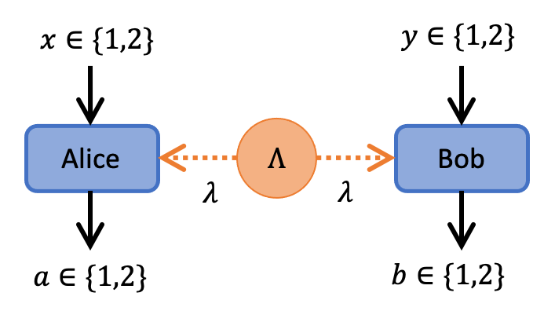

User Guide
Quickstart
julia> using Pkg; Pkg.add("BellScenario")using BellScenarioCHSH Scenario
The CHSH scenario is a BipartiteNonSignaling scenario where Alice and Bob each have a black-box with binary inputs and outputs.

This scenario is significant because it is the simplest Bell scenario in which quantum nonlocality can be observed. We will use BellScenario.jl to compute the CH Bell inequality and optimize quantum measurements to violate the CH inequality. First, create a CHSH Scenario to specify the black-box arrangement in the figure above.
# (num_out_A, num_out_B, num_in_A, num_in_B)
chsh_scenario = BipartiteNonSignaling(2,2,2,2)BipartiteNonSignaling(2, 2, 2, 2)Bell inequalities bound the set of local (classical) correlations. The local set is a convex polytope referred to as the local polytope and the facets of the local polytope are Bell inequalities. The standard method of computing Bell inequalities is to first compute the local polytope vertices, then apply a polytope transformation algorithm to compute the Bell inequalities.
The BellScenario.jl package provides the LocalPolytope module to compute Bell inequalities. The first step is to commpute the vertex representation for the CHSH scenario.
chsh_polytope = LocalPolytope.vrep(chsh_scenario)Polyhedron XPORTA.Polyhedron:
16-element iterator of Vector{Rational{Int64}}:
Rational{Int64}[1//1, 1//1, 1//1, 1//1, 1//1, 1//1, 1//1, 1//1]
Rational{Int64}[1//1, 1//1, 0//1, 1//1, 0//1, 1//1, 0//1, 1//1]
Rational{Int64}[1//1, 1//1, 1//1, 0//1, 1//1, 0//1, 1//1, 0//1]
Rational{Int64}[1//1, 1//1, 0//1, 0//1, 0//1, 0//1, 0//1, 0//1]
Rational{Int64}[0//1, 1//1, 1//1, 1//1, 0//1, 0//1, 1//1, 1//1]
Rational{Int64}[0//1, 1//1, 0//1, 1//1, 0//1, 0//1, 0//1, 1//1]
Rational{Int64}[0//1, 1//1, 1//1, 0//1, 0//1, 0//1, 1//1, 0//1]
Rational{Int64}[0//1, 1//1, 0//1, 0//1, 0//1, 0//1, 0//1, 0//1]
Rational{Int64}[1//1, 0//1, 1//1, 1//1, 1//1, 1//1, 0//1, 0//1]
Rational{Int64}[1//1, 0//1, 0//1, 1//1, 0//1, 1//1, 0//1, 0//1]
Rational{Int64}[1//1, 0//1, 1//1, 0//1, 1//1, 0//1, 0//1, 0//1]
Rational{Int64}[1//1, 0//1, 0//1, 0//1, 0//1, 0//1, 0//1, 0//1]
Rational{Int64}[0//1, 0//1, 1//1, 1//1, 0//1, 0//1, 0//1, 0//1]
Rational{Int64}[0//1, 0//1, 0//1, 1//1, 0//1, 0//1, 0//1, 0//1]
Rational{Int64}[0//1, 0//1, 1//1, 0//1, 0//1, 0//1, 0//1, 0//1]
Rational{Int64}[0//1, 0//1, 0//1, 0//1, 0//1, 0//1, 0//1, 0//1]Then, the Bell inequalities can computed using the LocalPolytope.facets function.
chsh_facets = LocalPolytope.facets(chsh_polytope)24-element Vector{Vector{Int64}}:
[0, 0, 0, 0, -1, 0, 0, 0, 0]
[0, 0, 0, 0, 0, -1, 0, 0, 0]
[0, 0, 0, 0, 0, 0, -1, 0, 0]
[0, 0, 0, 0, 0, 0, 0, -1, 0]
[-1, 0, 0, 0, 0, 1, 0, 0, 0]
[-1, 0, 0, 0, 1, 0, 0, 0, 0]
[0, -1, 0, 0, 0, 0, 0, 1, 0]
[0, -1, 0, 0, 0, 0, 1, 0, 0]
[0, 0, -1, 0, 0, 0, 1, 0, 0]
[0, 0, -1, 0, 1, 0, 0, 0, 0]
⋮
[0, -1, 0, -1, -1, 1, 1, 1, 0]
[0, 1, 0, 1, 0, 0, 0, -1, 1]
[0, 1, 1, 0, 0, 0, -1, 0, 1]
[1, 0, 0, 1, 0, -1, 0, 0, 1]
[1, 0, 1, 0, -1, 0, 0, 0, 1]
[0, 1, 0, 1, 1, -1, -1, -1, 1]
[0, 1, 1, 0, -1, 1, -1, -1, 1]
[1, 0, 0, 1, -1, -1, 1, -1, 1]
[1, 0, 1, 0, -1, -1, -1, 1, 1]We'll take $15^{th}$ facet as it represents the CH inequality
\[- P_A(1|2) - P_B(1|1) + P(11|11) - P(11|12) + P(11|21) + P(11|22) \leq 0.\]
In fact, this inequality is equivalent to the more celebrated CHSH inequality. The difference is that the CH inequality is expressed in terms of probabilities whereas the CHSH inequality is expressed in terms of bipartite correlators.
ch_inequality = chsh_facets[15]9-element Vector{Int64}:
0
-1
-1
0
1
-1
1
1
0Now that we have computed a Bell inequality, we can find a quantum violation using the Nonlocality module. In this example, we will fix Alice's measurement and the quantum state shared between Alice and Bob.
# maximally entangled state
ρ_AB = [1 0 0 1;0 0 0 0;0 0 0 0;1 0 0 1]/2
# Alice's measurement bases
Π_ax = [
[[1 0;0 0], [0 0;0 1]], # Pauli Z basis
[[1 1;1 1]/2, [1 -1;-1 1]/2] # Pauli X basis
]2-element Vector{Vector{Matrix{Float64}}}:
[[1.0 0.0; 0.0 0.0], [0.0 0.0; 0.0 1.0]]
[[0.5 0.5; 0.5 0.5], [0.5 -0.5; -0.5 0.5]]Then, we convert the ch_inequality into a general representation of a BellGame.
ch_game = convert(BellGame, ch_inequality, chsh_scenario)4×4 BellGame:
1 0 1 1
1 1 0 0
0 1 1 0
1 1 1 0Finally, we optimize Bob's measurement with respect to the fixed state and measurements.
opt_dict = Nonlocality.optimize_measurement(
chsh_scenario, ch_game, ρ_AB, A_POVMs=Π_ax
)Dict{String, Any} with 7 entries:
"scenario" => BipartiteNonSignaling(2, 2, 2, 2)
"A_POVMs" => QBase.POVM{Float64}[[[1.0 0.0; 0.0 0.0], [0.0 0.0; 0.0 1.0]], …
"score" => 3.20711
"game" => [1 0 1 1; 1 1 0 0; 0 1 1 0; 1 1 1 0]
"violation" => 0.207109
"B_POVMs" => QBase.POVM{ComplexF64}[[[0.853554+0.0im 0.353554+0.0im; 0.3535…
"state" => Number[0.5 0.0 0.0 0.5; 0.0 0.0 0.0 0.0; 0.0 0.0 0.0 0.0; 0.5 …We see that the inequality is violated for the optimized measurement and states.
opt_dict["violation"]0.20710899850467124